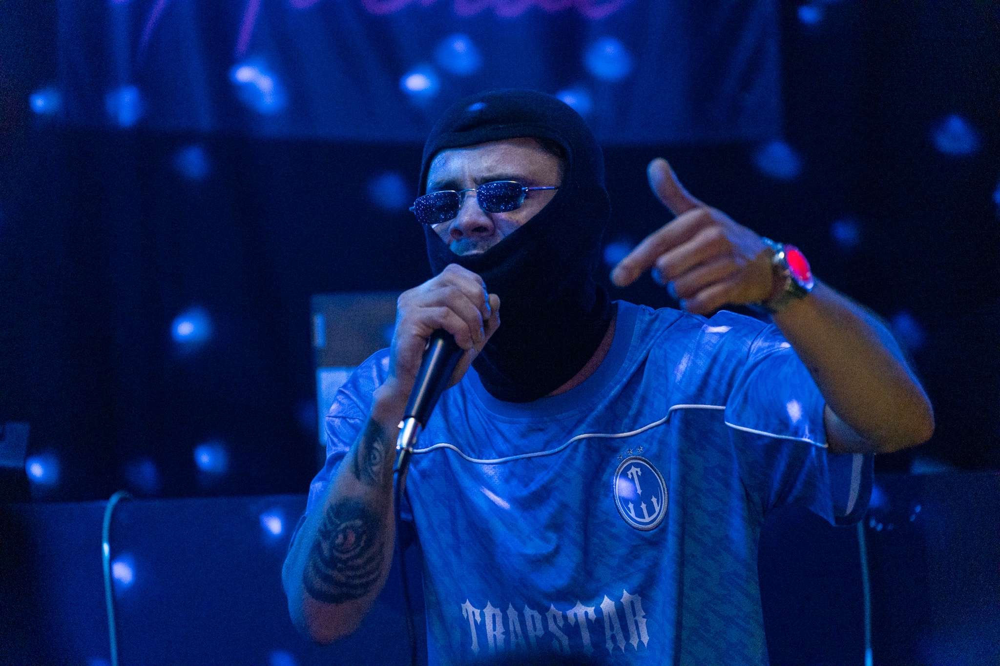

KS Records make dreams come true
At KS Records we put our artists first as they are the money makers so rest assured if you are worth it we will prioritize you
1
Meeting Your Music Needs because we care
KS Records provide a wide range of services such a financial advice, Management services, Studio time and lots more
Our Artists
KS Records work with many artists to help them realize their potential to the fullest
Here are some of our artists
| ClydoClydo | Pat Lagoon |
|---|---|
|
ClydoClydo is one of our many artist he joined our label back in 2021 and since then has released 2 albums with us If I slept for a while, "you best know im coming back relaxed & topped up"
ClydoClydo is our Irish Rapper based in Waterford City where dreams don't come true, unless you make them come true.
Your go to artist for some real stuff  |
The 22 year old rapper from Waterford City in the south-east of Ireland has been making rap music with us for awhile now and has not looked back since. His influences stem from artist like NAV, Tyler the Creator, Joey Badass, 88Glam and Majid Jordan. Lagoon has released two joint EP's "Agua Sippin EP" and "Recess".
A very promising artist hoping to shine light on the blossoming Irish Hip Hop sound and excel far beyond. |